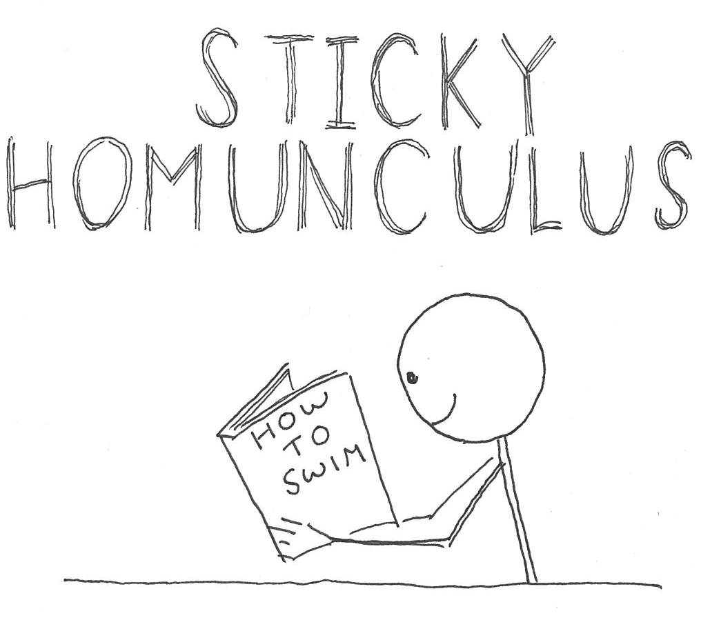
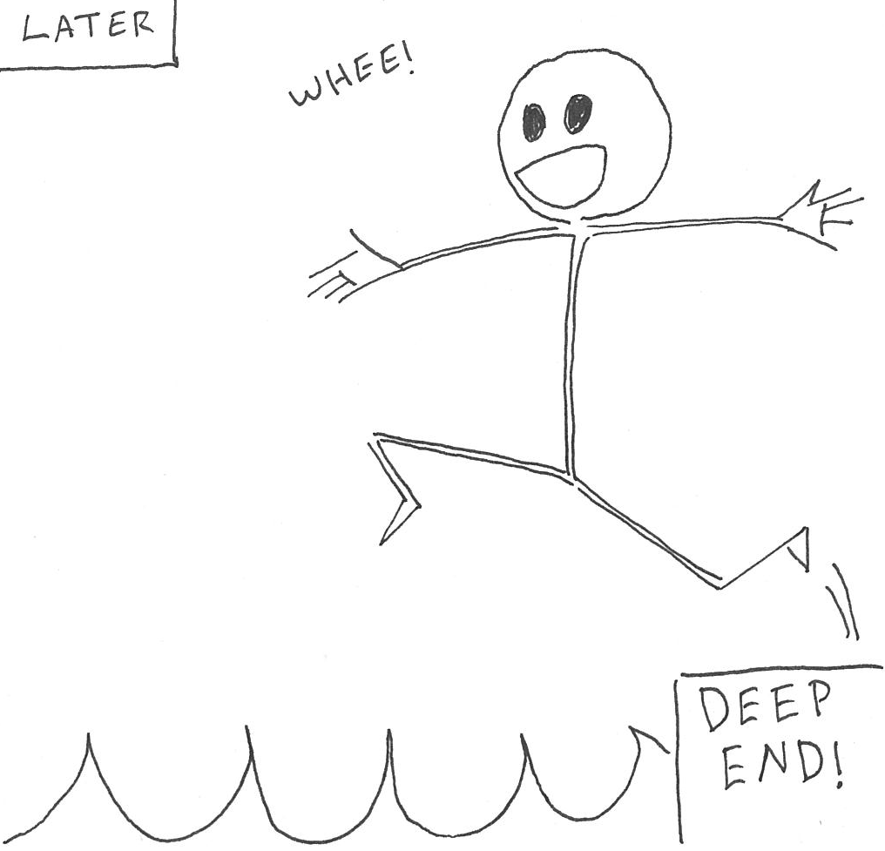
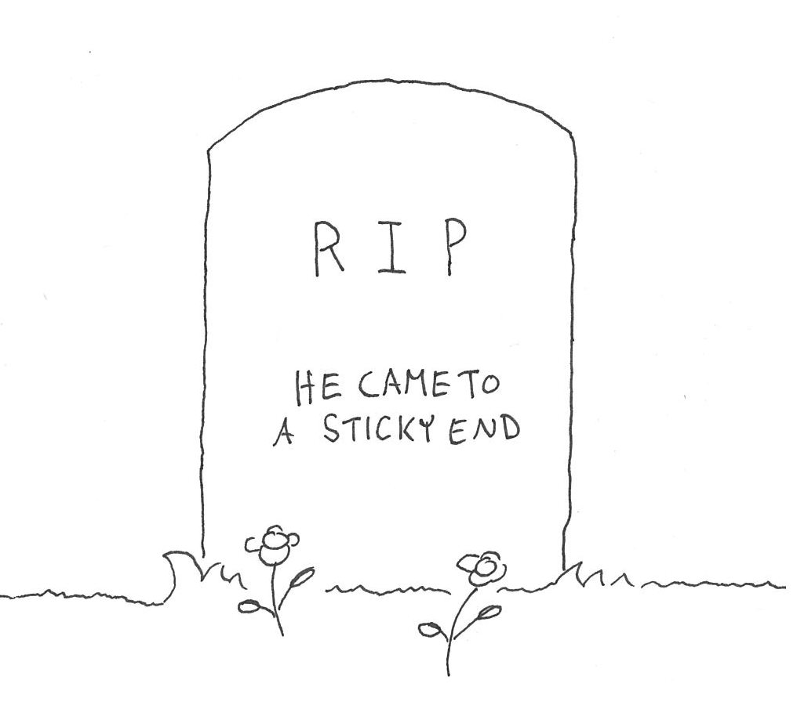
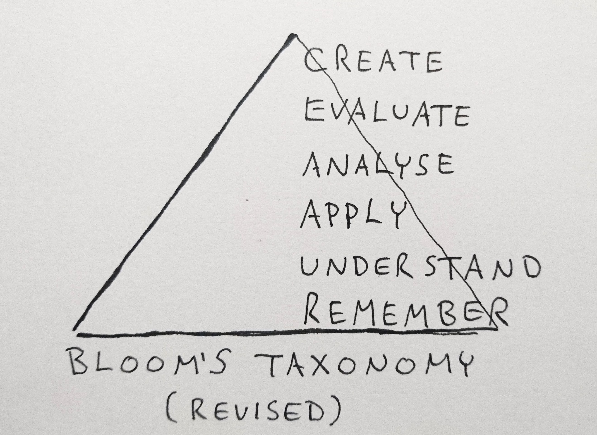
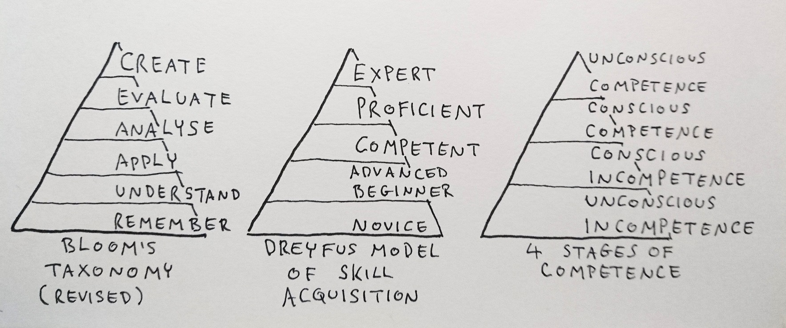

Introduction
Welcome. I've wanted to write this for a while, so I'm glad to finally set it loose. I'll cover the aspects of IT that interest me, although I work mostly with Azure, so may focus more on that, maybe some information about what learning techniques work for me, and the ~~occasional~~ frequent random side quest.
The first thing I want to do is answer the question "Why even bother?"
Answer. Primarily for educational purposes.
The act of learning new things well enough to write about them is far more effective than simply reading and hoping enough sticks, as demonstrated below.
  
The various models of learning created by educational psychologists support that theory. If we focus on just one model, Bloom's Taxonomy, the closer you get to the top, the dirtier your hands get (a motto for politicians?).

Bloom's Taxonomy was created in the 40's/50's and revised in the noughties. Although it's been a favorite in some circles for decades, it does receive some criticism, one being that there is an implied start and end point. In reality, I suspect the most successful learners bounce around a bit, starting at the bottom, working their way up a bit, then going back and working on weaker area's, building a more complete knowledge set each time.
It might make more sense if the model was a circle, or a set of fully connected nodes, but when we look at other models of learning, it appears educational psychologists just love their triangles.

What does this have to do with anything?
I wouldn't want to follow such a system with complete rigidity, and if we look at the process of creating this blog from conception to this post, it probably went something like this -
I already had some knowlege and understanding relating to the goal, and I was able to settle on Azure static sites for hosting to get a quick win (although I later switched to github codespaces because it's free).
I understood enough about static site generators to know I wanted to use an SSG rather than hand code all the html and deal with all the hassle of updating it. However, I didn't know enough to feel comfortable choosing one over the others. This required a step back, some research into different SSG's, plus a little play around writting my own in python.
This part of the project was a bit of a loop around the bottom of the triangle, reading about (and remembering) different SSG's and or the neccessary parts of Python I was unfamiliar with. I had to understand each of those things enough to apply that knowledge and cobble together small prototypes.
Eventually, with enough familiarity of the different frameworks and a basic one of my own, I was able to analyse the benefits and difficulties presented by each approach, and evaluate each against the other in relation to my requirements.
This is a heavily condensed recollection to keep the post concise. I also had to think about other things and in some cases, even though I had limited knowledge in one area, I've used something because I wanted to learn more about it.
This is the end, I hope it's not too disappointing.